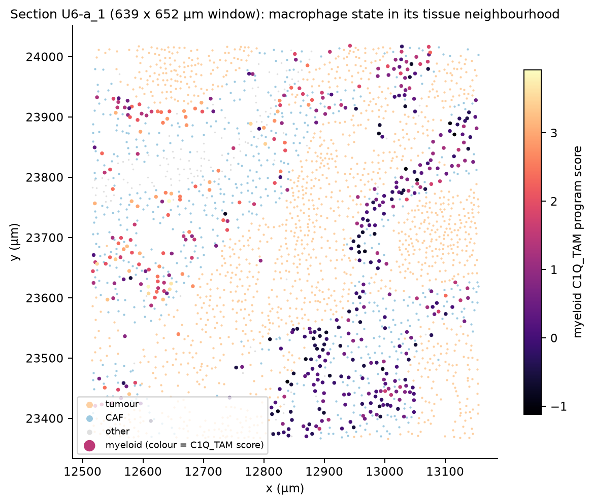
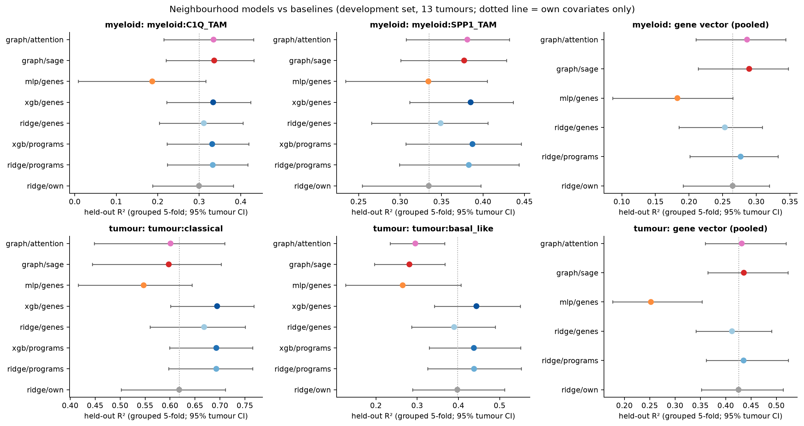
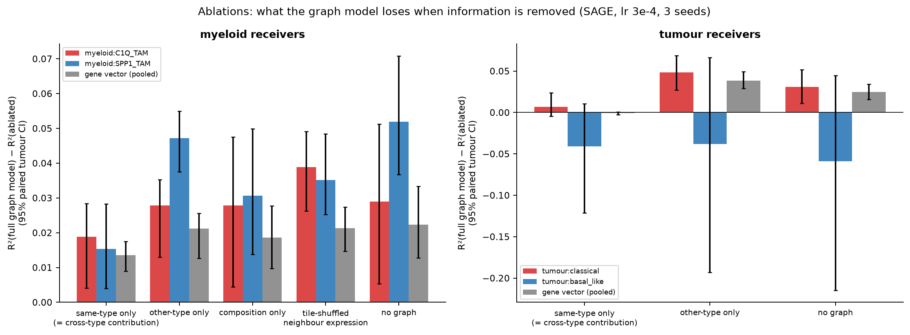
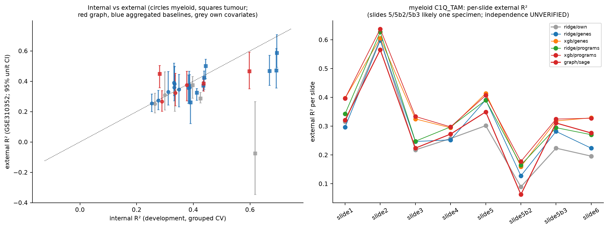
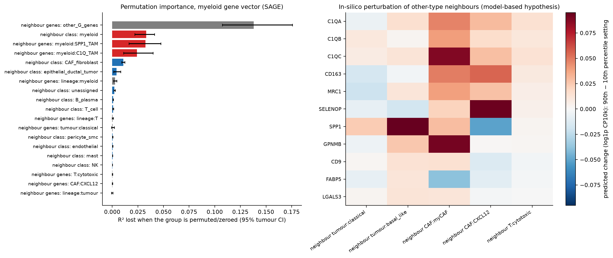
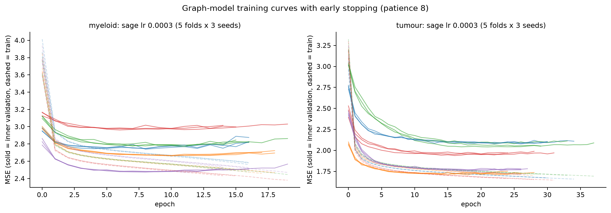
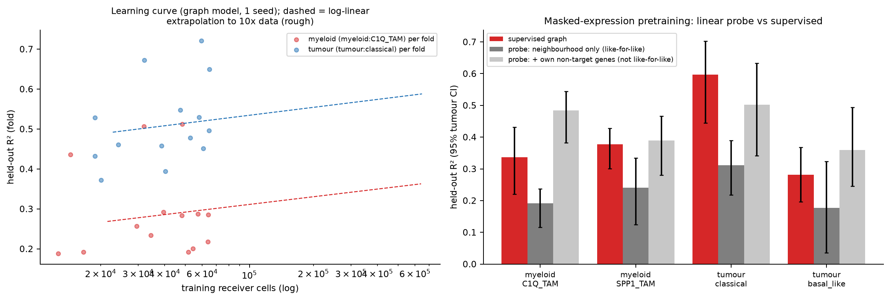

Can a cell's neighbours predict its state?
Graph models vs simple baselines in pancreatic cancer
We asked whether the expression state of a macrophage (its C1Q-type or SPP1-type program) or a tumour cell (classical or basal-like program) can be predicted from the cells around it, using 717,493 cells from 13 pancreatic tumours (CosMx, 16 sections) and testing once on an external cohort (GSE310352, 8 slides). The answer: neighbours do carry information, but a graph neural network is not better than simple aggregated baselines, and only a small share comes from other cell types — mostly from fibroblasts next to macrophages.
Outcome in one paragraph
A macrophage's neighbourhood improves the prediction of its C1Q-type program by about 0.03 R² beyond what its own size, density and local tissue zone already explain, and this gain holds on an external cohort (patient independence unverified) (+0.072 for XGBoost). A PyTorch graph model reaches the same level (0.336) but does not beat simple models built on averaged neighbour features, and its advantage does not transfer externally. Inside the graph model, removing other cell types costs 0.014–0.019 R² for macrophages (a real but minority share; fibroblasts lead) and nothing measurable for tumour cells, whose state is predicted from nearby tumour cells. These are predictive associations in expression data, not evidence of signalling.
1 · The question and the biology behind it
Cells read their surroundings
In a tumour, a cell's behaviour is thought to depend partly on what touches it: secreted signals act over a few cell diameters, matrix and contact cues act directly. If that is true, a cell's measured expression state should be partly predictable from its neighbours — after removing what its own properties and its broader tissue region already explain. Spatial transcriptomics (here CosMx, ~960 genes per cell with positions) makes that testable.
The catch: cells of the same kind cluster together, regions differ (tumour core vs stroma), and in imaging data transcripts can spill over between touching cells. A gain from neighbours is therefore an association, and the important question is which neighbours carry it: the same cell type ("cells resemble their own kind nearby") or other cell types (closer to the idea of cross-talk).
The cell states we predict
- C1Q_TAM macrophages (C1QA/B/C, CD163, MRC1, SELENOP): a complement-high, "tissue-resident-like" macrophage state often described in tumours.
- SPP1_TAM macrophages (SPP1, GPNMB, CD9, FABP5, LGALS3): a lipid/matrix-associated macrophage state often linked to fibrotic, remodelling regions.
- Classical vs basal-like tumour cells: the two widely used transcriptional PDAC subtypes; basal-like is usually associated with worse outcome. In our data the classical-minus-basal score agrees with the authors' own subtype labels (median AUC 0.858).
- CAFs (cancer-associated fibroblasts; myCAF contractile genes, CXCL12 chemokine) form much of PDAC's dense stroma and sit next to many macrophages.
Program gene lists are the pre-declared lists of the chain study (results/chain/phase1b); their literature sources are recorded there as UNVERIFIED.
Macrophage state in its tissue neighbourhood (section U6-a_1)
Each dot is a cell. Macrophages are coloured by their C1Q_TAM program score; tumour cells are orange, CAFs blue. High-C1Q macrophages (bright) and low ones (dark) occupy different neighbourhoods — the kind of spatial structure the models try to exploit. Illustration only; no statistic is read from this panel.

2 · How the test was set up (and kept honest)
- Unit = patient. 13 development tumours in 5 grouped folds (all sections of a tumour in one fold, ≥2 tumours per fold). Every confidence interval resamples tumours, not cells.
- Own covariates baseline: cell size (total counts, detected genes), local density, edge lengths and the average target in the surrounding 200 µm tile (a zonation control) — but never the cell's own expression.
- Neighbourhood baselines: ridge and XGBoost (GPU) on averaged neighbour programs and per-type neighbour gene means; an MLP.
- Graph models (PyTorch, GPU, mixed precision): SAGE-style and attention-style 2-hop message passing with cell-type embeddings and edge distances; the receiver cell is excluded from its own 2nd hop by construction.
- No leakage, tested: 15 unit tests, including one that plants the target among the inputs and must be caught, and one that checks no 2-hop path returns to the cell (the bug that inflated an earlier model).
- Pre-registered: plans committed before each phase; external cohort evaluated once with frozen models.
Plans: model_dev/plans/ · Full report: model_dev/reports/MODEL_REPORT_v1.md · Model card and data card: model_dev/reports/
3 · Result: neighbours help, graph models do not beat simple baselines
Held-out R² for every model and target (13 tumours, 95% tumour CI)
How to read it: each dot is a model's held-out R² (share of variation in the target explained in tumours the model never saw); bars are tumour-bootstrap 95% CIs; the dotted line is the own-covariates baseline. Points right of the line mean the neighbourhood adds information. What it shows: for macrophages, aggregated-neighbour models (blue) and the graph models (red/pink) all sit ~0.03–0.05 right of the baseline and on top of each other; the MLP (orange) is worse. For tumour cells, simple aggregated models are best and the graph models fall behind.

| Target | Own covariates | Best baseline | Graph (SAGE) | Graph − best baseline | Verdict |
|---|---|---|---|---|---|
| Macrophage C1Q_TAM (primary) | 0.300 | XGBoost/genes 0.334 | 0.336 | +0.0025 [−0.013, 0.015] | not better |
| Macrophage SPP1_TAM | 0.335 | XGBoost/programs 0.387 | 0.377 | −0.010 [−0.021, 0.007] | not better |
| Macrophage 11-gene vector | 0.265 | ridge/programs 0.277 | 0.289 | +0.013 [0.005, 0.020] | better (internal only) |
| Tumour classical | 0.618 | XGBoost/genes 0.694 | 0.597 | −0.097 [−0.172, −0.053] | worse |
| Tumour basal-like | 0.397 | XGBoost/genes 0.444 | 0.281 | −0.163 [−0.330, −0.045] | worse |
| Tumour 18-gene vector | 0.425 | ridge/programs 0.435 | 0.436 | +0.0005 [−0.005, 0.007] | not better |
Source: model_dev/results/phase2/baseline_summary.csv, phase3/graph_summary.csv. Seed-mean of 3 seeds for neural models. Chain-study numbers reproduce exactly (|Δ| = 0.0000).
4 · How much comes from OTHER cell types?
What the graph model loses when information is removed
How to read it: each bar is the R² the full graph model loses when we retrain it with some information removed (same folds, same 3 seeds). "Same-type only" keeps only neighbours of the receiver's own type; its bar is the cross-type contribution. "Tile-shuffled" swaps every neighbour's expression with a random same-type cell from the same 200 µm region — it tests whether fine, cell-to-cell co-variation matters beyond regional zonation.

Macrophages: a small cross-type share
Cross-type contribution +0.019 [0.004, 0.028] (C1Q_TAM), +0.015 [0.004, 0.028] (SPP1_TAM), +0.014 [0.009, 0.018] (gene vector) — all CIs exclude zero. Shuffling neighbours within tiles costs +0.039 [0.026, 0.049]: the signal is finer than regional zonation.
Tumour cells: same-type only
Cross-type contribution +0.007 [−0.004, 0.024] (classical), CI includes zero. Tumour-cell state is predicted from nearby tumour cells; removing them (other-type only) costs +0.048 [0.027, 0.069].
Caveat: the cross-type contribution is measured inside a model that does not beat the aggregated baselines on program targets, and the same-type-only ablation also removes the positions of other cell types.
5 · External test: what transfers to another cohort
How to read it: left — each point compares a model's internal R² (x) with its external R² (y); on the diagonal means it transferred unchanged. Right — external R² per slide for the macrophage C1Q_TAM target. What it shows: aggregated neighbourhood models transfer well (XGBoost C1Q_TAM +0.072 [0.031, 0.107] over own covariates externally); the graph model's gain does not (+0.014 [−0.014, 0.046]). The tumour own-covariate baseline collapses externally (R² −0.074) because the label scheme differs (author labels for training, marker labels externally).

The 8 external slides form 6 units (slides 5/5b2/5b3 grouped); patient identity and independence from the development set are UNVERIFIED, so this is a consistency check, not proof of generalisation.
6 · Interpretation: which neighbours, and a model-based hypothesis
Run only where the graph model beat the strongest baseline (the macrophage gene vector). Left: how much R² is lost when one neighbour group is scrambled. Other macrophages matter most (0.033 [0.022, 0.041]); CAFs are the leading other cell type (0.011 [0.009, 0.012]), then tumour cells (0.004). Zeroing the curated CAF program genes alone costs almost nothing (≤0.0005), so the model uses the CAFs' broader expression profile. Right: predicted change in each macrophage gene when neighbouring cells' program genes are set from their 10th to their 90th percentile.

Model-based hypothesis (not a finding)
When neighbouring CAFs express more CXCL12, the model predicts macrophages shifted toward the C1Q/CD163/SELENOP state (SELENOP +0.074 [0.058, 0.094], CD163 +0.044 [0.031, 0.060]) and away from SPP1 (−0.041 [−0.052, −0.033]); more basal-like tumour neighbours predict higher macrophage SPP1 (+0.048 [0.019, 0.092]). Effects are small (log-expression units). The CAF–C1Q macrophage direction agrees with the exploratory adjacency lead of the earlier chain study, but both come from the same kind of data. A testable version: macrophage–CAF co-culture with CXCL12 blocked, reading out C1Q/SELENOP/SPP1.
7 · Training behaviour, pretraining and data scale
Validation loss (solid) and training loss (dashed) for the selected SAGE model, 5 folds × 3 seeds, early stopping. Early stopping typically triggers after 17–24 epochs (median over runs); no runaway overfitting. 240 GPU runs in 3.6 GPU-hours (peak 2.0 GB VRAM), every run checkpointed.

Left: R² grows by ~0.064 per tenfold more training cells (rough extrapolation: ~0.36 for C1Q_TAM at 10× data). Right: a masked-expression self-supervised encoder probed linearly does not help (neighbourhood-only probe 0.192 vs 0.336 supervised for C1Q_TAM). Not a foundation model.

8 · Limitations and next steps
Limitations
- 13 development tumours → wide intervals; external units not verified independent patients.
- Author labels for training vs marker labels externally (annotation shift).
- Transcript spillover between touching cells is not modelled; neighbour co-variation is not evidence of signalling.
- Short CosMx program lists (5–10 genes); T cells too few to be targets.
- Logged deviations: fold rule, tumour cap (8,000 cells/section), XGBoost-CUDA instead of sklearn HGB; a sign bug in paired differences was fixed before any result was reported.
Next steps
- Add a segmentation-spillover control before reading cross-type co-variation biologically.
- Measure the cross-type share on the best (aggregated XGBoost) model, not only the graph model.
- External cohort with verified patient IDs and more units.
- Test CAF CXCL12 → C1Q/SELENOP macrophages experimentally (co-culture, CXCL12 blockade).
- Scale data (more tumours) before scaling models.
All numbers on this page are copied from model_dev/results (index: model_dev/results/phase7/key_numbers.csv). Expression data; predictive associations; no causal or clinical claims.